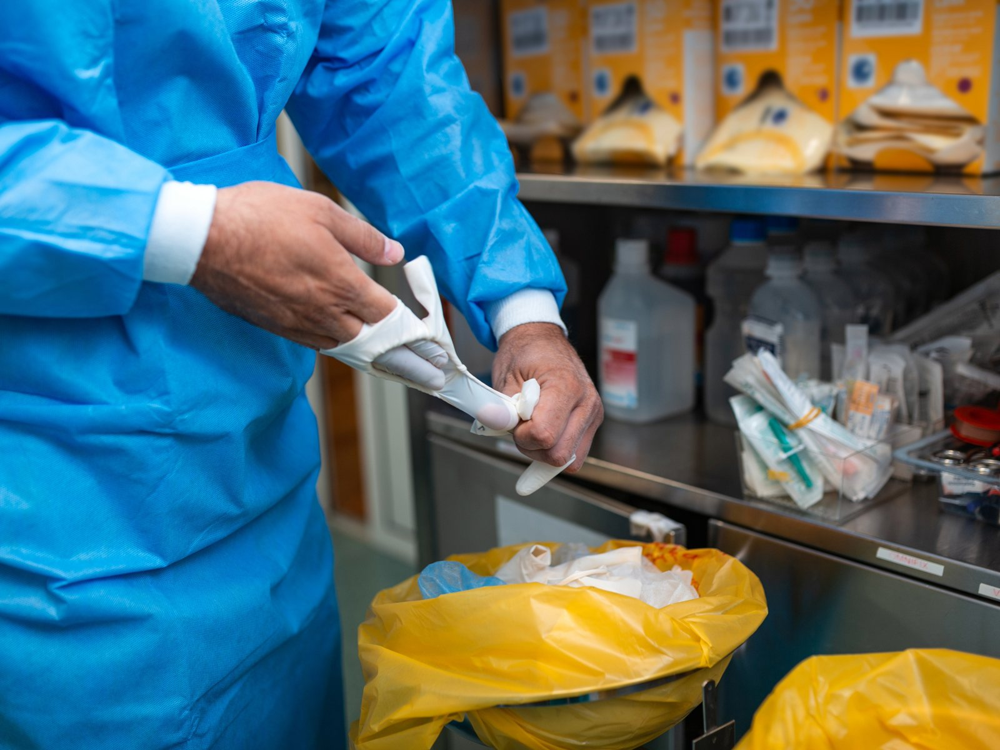

반려견이 세상을 떠난 날, 보호자가 가장 먼저 마주하는 것은 슬픔이 아니라 당혹감이다. 어디로 데려가야 하는지, 얼마가 드는지, 그때까지 어디에 두어야 하는지 알려주는 곳이 없다.
검색을 해보면 답이 나온다. 현행법상 반려동물 사체는 생활폐기물 또는 의료폐기물이다. 집에서 죽었다면 종량제 봉투에 담아 배출하는 것이 합법이고, 동물병원에 맡기면 의료폐기물로 분류돼 소각된다. 십수 년을 가족이라 부르며 함께 산 동물의 마지막 법적 지위가 그렇다.

정식으로 장례를 치르려면 선택지는 하나뿐이다. 정부에 등록된 동물장묘시설을 이용하는 것이다. 그런데 이 시설들은 대부분 도심에 없다. 화장 시설이 혐오시설로 분류돼 주민 반대에 부딪히기 때문이다. 서울에 사는 보호자가 반려동물을 화장하려면 경기 광주나 용인, 남양주까지 나가야 한다. 왕복 두세 시간이 걸린다.
시간만 문제가 아니다. 가격이 제각각이다. 업체와 체중에 따라 다르지만 마리당 25만 원 이상이 드는 경우가 많다. 유골함, 수의, 추모 액자 같은 부가 항목이 붙으면 금액은 더 올라간다. 정형화된 요금 기준이 없다 보니 보호자는 슬픔에 잠긴 상태에서 견적을 비교해야 한다.
그래서 벌어지는 일이 있다. 비용과 거리를 감당하지 못한 보호자가 야산이나 공원에 사체를 묻는 것이다. 이는 불법이지만 단속이 쉽지 않다. 결국 환경 오염과 민원으로 이어지고, 그 처리 비용은 지자체 예산에서 나간다.
공백은 제도에서 비롯됐다. 동물보호법은 반려동물 등록을 의무화했다. 국가가 마이크로칩까지 심어 개체를 관리한다. 그런데 그 동물이 죽었을 때 어떻게 처리할지에 대한 공공 인프라는 사실상 없다. 등록이라는 시작은 있는데 처리라는 끝이 없는 셈이다.
변화의 계기는 있었다. 지난 2026년 6월 농림축산식품부령 「동물보호법 시행규칙」이 개정되면서 이동형 장묘 차량이 동물장묘업 시설기준에 정식 편입됐다. 고정된 건물이 아니라 차량으로 찾아가는 화장 서비스가 제도권에 들어온 것이다.
앞서 서울 마포구는 민간 장례업체와 협약을 맺고 ‘찾아가는 펫천사’를 운영했고, 경기 안산시도 규제샌드박스 실증특례를 통해 이동식 화장 차량을 실증했다. 기술적으로도 행정적으로도 불가능한 일이 아니라는 뜻이다.
문제는 확산 속도다. 전국 지자체 대부분은 여전히 유기동물 보호와 로드킬 사체 처리에 각각 예산을 쓰면서, 정작 주민들이 겪는 사후 처리 문제는 개인의 몫으로 남겨두고 있다.
최근 이 공백을 메우겠다며 출범한 단체가 있다. 지난 7월 창립한 한국반려동물이동장례협회는 지자체가 이미 분산 집행하고 있는 예산을 재편성해 이동식 화장차를 시범 도입하자고 제안한다. 신규 예산 없이 가능하고, 운영자는 공개 공모로 선정해 지역 소상공인에게 맡기자는 구상이다.
협회는 현재 서울 양천구에서 주민 300명의 서명을 받았고, 서초구와 강서구, 경기 남양주시, 대구광역시 9개 구·군에서도 서명을 받고 있다.
엄재용 협회 대표는 “반려동물을 가족으로 여기는 사람이 1500만 명인데, 그 가족을 보내는 방법이 종량제 봉투라는 건 제도가 현실을 따라가지 못한다는 뜻”이라며 “지자체가 이미 쓰고 있는 예산을 조금만 다르게 쓰면 해결할 수 있는 문제”라고 말했다.
언론 보도 원문
언론 게재 준비 중입니다. 게재 후 이 자리에 원문 링크를 연결합니다.